01 Objective
Attack Disruption is Microsoft's automated response capability inside Defender XDR — when it has high enough confidence that an identity or device is mid-attack, it acts on its own: isolating machines, suspending accounts, disabling compromised credentials. The only way to actually trust that is to try to trigger it myself and watch what it does.
I picked LSASS memory dumping as the technique to simulate. LSASS (Local Security Authority Subsystem Service) holds credential material in memory, and dumping it is one of the most common moves in human-operated ransomware campaigns — the step right before an attacker starts moving laterally with stolen credentials. It's a high-fidelity, high-severity signal, which made it a good test of whether Attack Disruption would actually fire the way it's supposed to.
02 Setup
- Provisioned an Azure VM and onboarded it to Microsoft Defender for Endpoint, confirming the sensor was checking in before starting.
- Downloaded Sysinternals Procdump to the VM as the credential-dumping tool.
- Planned to chain the dump with an Atomic Red Team lateral-movement test, to simulate more than one stage of an attack rather than a single isolated action.
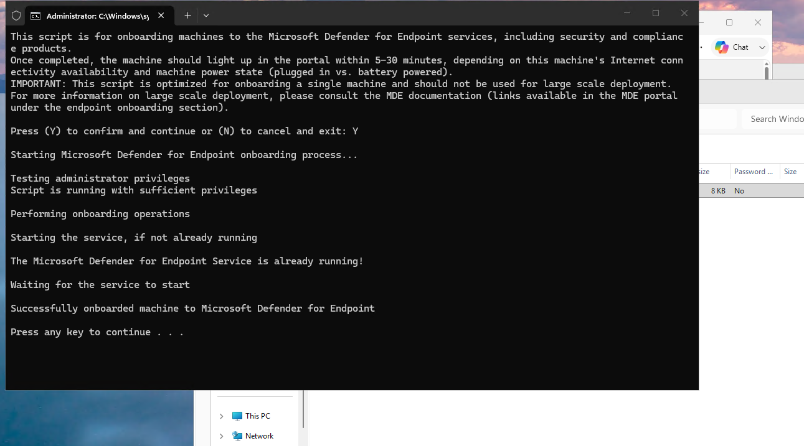
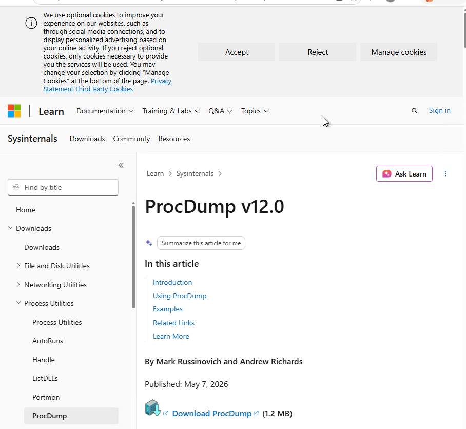
03 Running the simulation
From an elevated PowerShell session on the VM:
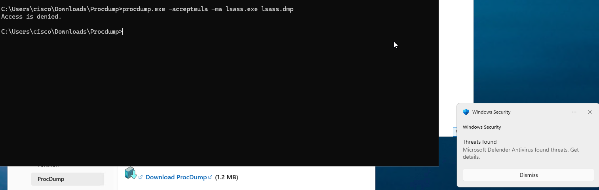
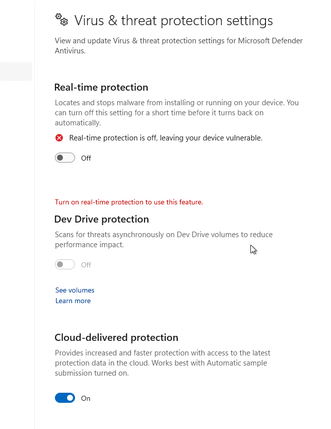
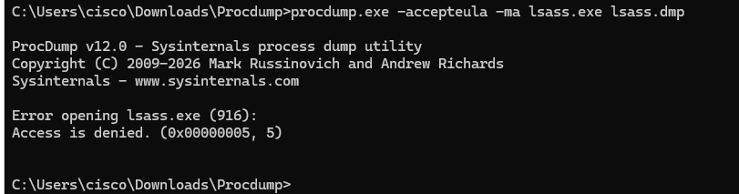
04 Detection & automated response
Back in the Defender portal, an incident had already been created in Incidents & alerts, tagged with Attack Disruption for the LSASS dumping attempt.
One thing I didn't expect: the incident correlation pulled in more than just this VM. The same incident had merged in a colleague's parallel attempt from the same lab tenant — a good real demonstration of Defender XDR correlating signal across identities and devices, not just flagging isolated per-machine events.
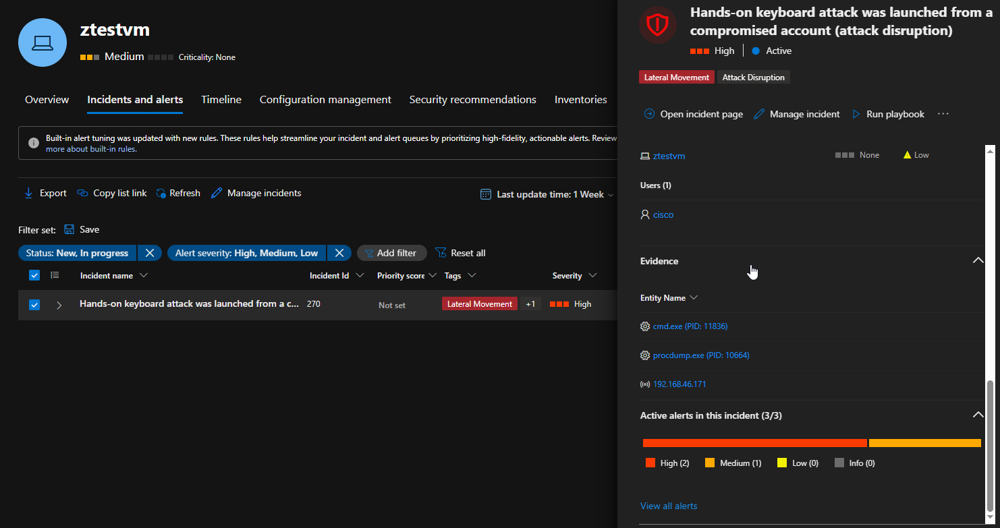
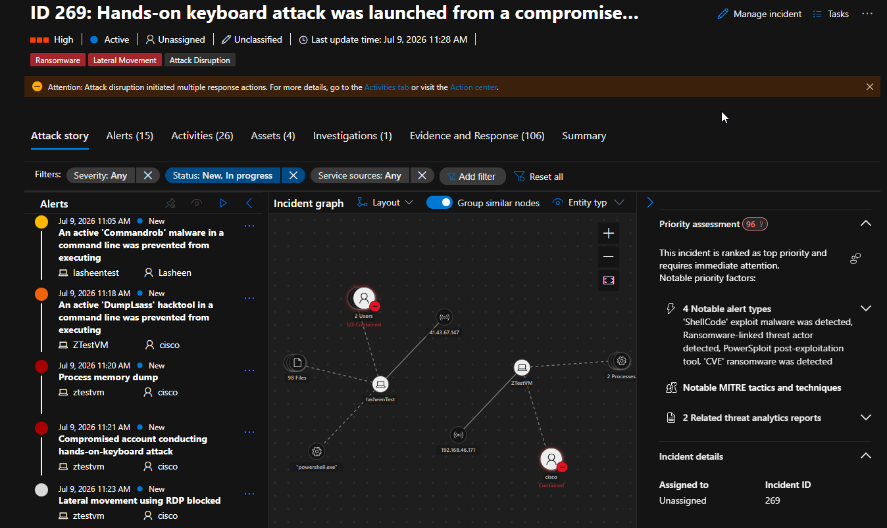
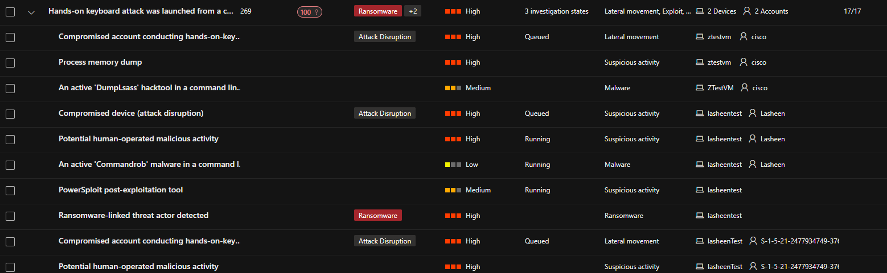
Digging into the attack story and activities timeline showed exactly what Defender did on its own, in order:
- Terminated the active RDP session.
- Contained the device — isolating it from the network except for Defender's own management traffic.
- Suspended the associated user account in Entra ID.
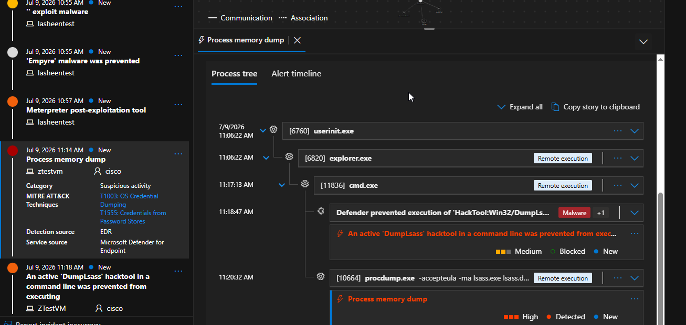
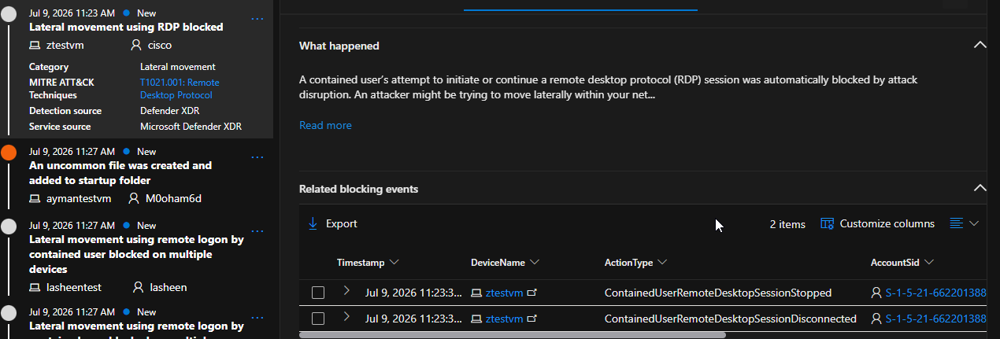
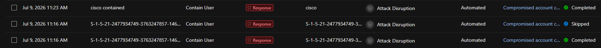
The Action Center held the full audit trail of both automated actions — exactly the artifact you'd pull for a post-incident review.
05 Clean-up
- Released the device from isolation via the Action Center once the lab was verified.
- Re-enabled the suspended test user account in Entra ID.
- Re-enabled real-time protection on the VM.
06 Technique reference
| Technique | Tactic | MITRE ID |
|---|---|---|
| OS Credential Dumping: LSASS Memory | Credential Access | T1003.001 |
07 Takeaways
- Attack Disruption reacted to the attempt itself, not a completed attack — it didn't wait for the lateral-movement stage to confirm the pattern.
- Pairing device containment with account suspension cuts off the two things an attacker actually needs next: a working session and a working identity.
- Watching an incident quietly absorb a second, unrelated attacker's activity was a better demonstration of cross-signal correlation than any slide could have been.